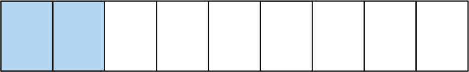
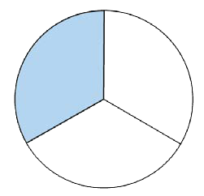
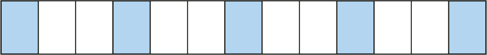

(b)

(c)

(d)

7.
Musa aligawanya mche wa sabuni katika sehemu nne zilizo sawa. Alimpa dada yake kipande kimoja. Je, alimpa sehemu gani ya mche huo?
8.
Mbuzi wawili ni sehemu gani ya mbuzi sita?
9.
Kuna maembe manane, kati ya hayo mawili ni mabovu. Maembe mabovu ni sehemu gani ya maembe yote?
10.
Mkulima amechuma mapapai sita anataka kuwagawia watoto wake watatu kwa usawa. Je, kila mtoto atapata sehemu gani ya mapapai yote?
11.
Selemani alikuwa na papai moja. Aliamua agawane papai hilo na rafiki zake wawili katika vipande vilivyo sawa. Je, kila moja alipata sehemu gani ya papai hilo?
12.
Sadiki ana ndizi ishirini. Anataka kuwapa ndizi watoto wake wanne kwa usawa. Je, kila mtoto atapata sehemu gani ya ndizi zote?